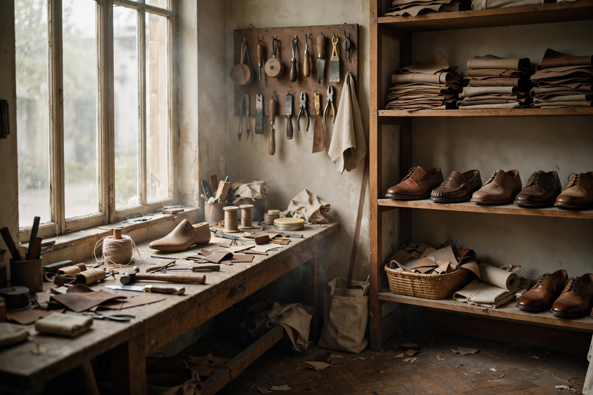

Kontak atelier
YogyakartaAtelier terbuka untuk yang mau melihat prosesnya, mencoba last, atau sekadar ngobrol soal kaki.
Alamat
Prawirotaman
Jl. Prawirotaman, Ngaglik, Sleman
DI Yogyakarta 55581
Indonesia
Jam kunjung
Selasa–Sabtu
10.00 – 17.00 WIB
Dengan janji temu
Minggu & Senin tutup

Atelier Jejakara — Prawirotaman, YogyakartaSebelum datang
Kunjungan janji temu agar pengrajin tidak sedang di tengah jahitan — kirim pesan hari itu paginya. Boleh bawa sepatu lama untuk dicek solnya, ukur kaki untuk custom last, atau lihat sisa kulit sebelum pesan dibuat khusus.
Kalau tidak sempat: semua bisa jalan lewat WhatsApp — ukuran, warna, sampai pengukuran kaki dari rumah dengan alat sederhana. Panduannya di panduan ukuran.
Lihat koleksi